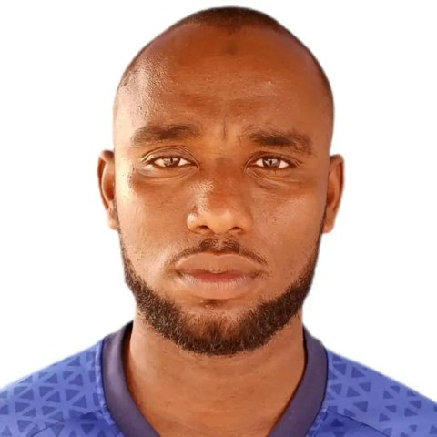

MAKOUNDJI FRANCIS DIAKOUNDILA
Professionnel IT à N’Djamena. Je mets en place et je dépanne des réseaux, des postes et des connexions satellite, et je crée des applications web qui fonctionnent en production.
À propos
J’ai un niveau Bac+2 en informatique (Université de Maroua, Cameroun). J’ai fondé DDM TECH à N’Djamena, une structure de services IT qui installe des connexions internet par satellite (Starlink) et dépanne les réseaux et le matériel, pour des particuliers comme pour des entreprises.
J’ai aussi fait un stage au CHU La Renaissance, où j’ai assuré le support de plusieurs services en priorisant la continuité de service. J’enseigne l’informatique du CE1 à la 4e au Complexe Scolaire International "LE ROCHER".
Je travaille en autonomie, y compris avec peu de moyens, et je suis ouvert aux postes, stages, missions et formations en IT, au Tchad comme à l’étranger.
Compétences
Réseaux et connectivité
- TCP/IP, LAN/WAN
- Configuration de domaine
- Routeur MikroTik
- Installation Starlink
Systèmes et matériel
- Windows 10/11 (bon niveau)
- Linux (intermédiaire)
- VMware, partage de ressources
- PC, imprimantes, périphériques
Développement web
- HTML, CSS, JavaScript, React
- Python, Django REST Framework
- Firebase, PostgreSQL
- Git/GitHub, Vercel, Render
Relation et transmission
- Support à des utilisateurs non techniques
- Devis et suivi d’interventions
- Formation et enseignement
- Word, Excel, PowerPoint, Publisher
Projets
NetDoctor
Application web de diagnostic réseau : tests Ping, DNS et HTTP, historique détaillé et export PDF.
Ouvrir NetDoctorSite de DDM TECH
Site vitrine de mon entreprise, avec formulaires connectés à une base de données et tableau de bord d’administration sécurisé.
Ouvrir le siteFriya Noor
Boutique en ligne de voiles et boubous traditionnels faits à Maroua : panier, commande en ligne et paiement à la livraison, Orange Money ou MTN Mobile Money.
Ouvrir la boutiqueMon portfolio
Cette page : un portfolio d’une seule page, rapide et lisible sur téléphone, hébergé sur GitHub et déployé sur Vercel.
Ouvrir le portfolioExpérience
- Depuis juillet 2025
Fondateur et responsable d’exploitation, DDM TECH
- Installation et maintenance de connexions Starlink pour particuliers et entreprises
- Diagnostic et réparation d’incidents matériels et réseau
- Relation client complète : besoin, devis, intervention, suivi
- Formation des utilisateurs, conception du site de l’entreprise
- Avril – mai 2026
Stagiaire IT, CHU La Renaissance
- Maintenance de postes, imprimantes et périphériques en milieu hospitalier
- Résolution d’incidents réseau touchant plusieurs départements
- Installation de Windows 10/11 sur le parc concerné
- Support à l’administration, au laboratoire, à l’imagerie et à la cardiologie
- Tâches serveur et virtualisation (VMware, domaine)
- En cours
Enseignant en informatique, Complexe Scolaire International Le Rocher
- Cours d’informatique du CE1 à la 4e au complexe scolaire international "LE ROCHER", avec un contenu adapté à chaque niveau
Formation
Parcours
- Études supérieures en informatique, niveau Bac+2, Université de Maroua (Cameroun)
- Baccalauréat série D, Lycée Sacré-Cœur (Tchad), 2020
Certifications et formations
- Cisco Networking Academy : Endpoint Security (2026) et notions de base sur les réseaux
- Data Scraping, Orange Cameroun (2025)
- Maintenance informatique (2024)
- Bureautique (2023)
Contact
+235 66 24 28 11 · +235 62 01 65 18
N’Djamena, Tchad. Références sur demande.